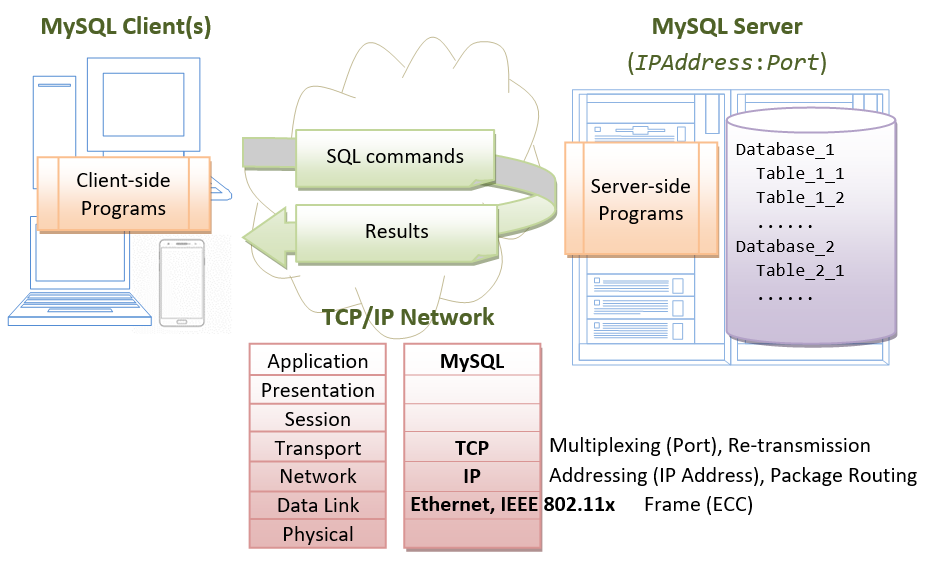
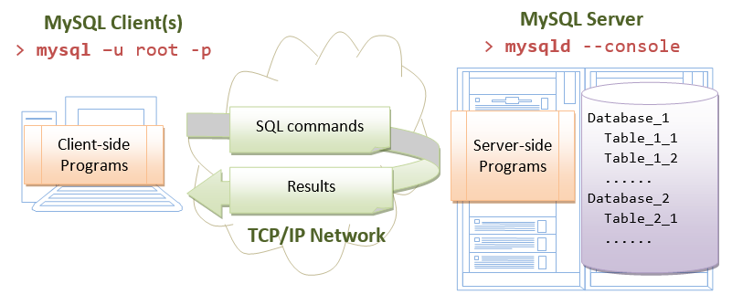
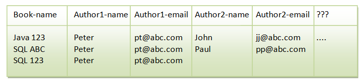

This article is applicable to MySQL 8.x.
MySQL version numbers progress from 5.7 ⇒ Versions 6 and 7 were dropped ⇒ 8.0 ⇒ 8.1 ⇒ 8.2 ⇒ 8.3.
Introduction to Relational Database and SQL
Relational Databases
A relational database organizes data in tables. A table has rows (or records) and columns (or fields), similar to spreadsheets. But unlike spreadsheets, tables are related based on common columns to eliminate data redundancy and ensure data integrity.
Popular Relationship Database Management System (RDBMS) includes:
- the commercial Oracle, IBM DB2, Microsoft SQL Server and Access, SAP Hana.
- the open-source MySQL, PostgreSQL, mariaDB, Embedded Apache Derby (Java DB), mSQL (mini-SQL), SQLite, Apache OpenOffice's Base, and mongoDB (non-relational).
Structure Query Language (SQL)
A high-level programming language, called Structure Query Language (SQL), is designed for interacting with the relational databases. SQL defines a set of commands, such as SELECT, INSERT, UPDATE, DELETE, CREATE TABLE, DROP TABLE, and etc.
Edgar F. Codd of IBM proposed the Relational Database Model in 1970. SQL, one of the earlier programming language, was subsequently developed by Donald D. Chamberlin and Raymond F. Boyce at IBM in the early 1970s. Oracle, subsequently, took it to a new height.
ANSI (American National Standard Institute) established the first SQL standard in 1986 (SQL-86 or SQL-87) - adopted by ISO/IEC as "ISO/IEC 9075" - followed in 1989 (SQL-89), 1992 (SQL-92 or SQL2), 1999 (SQL-99 or SQL3), 2003 (SQL:2003), 2006 (SQL:2006), 2011 (SQL:2011) and 2016 (SQL:2016). However, most of the database vendors have their own directs, e.g., PL/SQL (Oracle), Transact-SQL (Microsoft, SAP), PL/pgSQL (PostgreSQL).
SQL By Examples
A relational database system organizes data in the following hierarchy:
- A relational database system contains many databases.
- A database comprises tables.
- A table have rows (or records) and columns (or fields).
Suppose we have a database called studentdb, a table called class101 in the database with 3 columns (id, name, gpa) and 4 rows as illustrated below. Each column has a data type. We choose: INT (integer) for column id, VARCHAR(50) (variable-length string of up to 50 characters) for name, and FLOAT (floating-point number) for gpa.
Database: studentdb Table: class101 +-----------+--------------------+-------------+ | id (INT) | name (VARCHAR(50)) | gpa (FLOAT) | +-----------+--------------------+-------------+ | 1001 | Tan Ah Teck | 4.5 | | 1002 | Mohammed Ali | 4.8 | | 1003 | Kumar | 4.8 | | 1004 | Kevin Jones | 4.6 | +-----------+--------------------+-------------+
SQL (Structure Query Language) defines a set of intuitive commands (such as SELECT, INSERT INTO, DELETE FROM, UPDATE) to interact with relational database system.
SELECT
-- SYNTAX SELECT column1, column2, ... FROM tableName WHERE criteria SELECT * FROM tableName WHERE criteria // * is wildcard for ALL columns -- EXAMPLES SELECT name, gpa FROM class101 -- Select columns name and gpa from table class101. +--------------+------+ | name | gpa | +--------------+------+ | Tan Ah Teck | 4.5 | | Mohammed Ali | 4.8 | | Kumar | 4.8 | | Kevin Jones | 4.6 | +--------------+------+ SELECT * FROM class101 -- Select ALL columns from table class101. -- The wildcard * denotes all the columns. +------+--------------+------+ | id | name | gpa | +------+--------------+------+ | 1001 | Tan Ah Teck | 4.5 | | 1002 | Mohammed Ali | 4.8 | | 1003 | Kumar | 4.8 | | 1004 | Kevin Jones | 4.6 | +------+--------------+------+ SELECT name, gpa FROM class101 WHERE gpa >= 4.7 -- Select columns name and gpa from table class101, where the rows meet the criterion (gpa >= 4.7). -- You can compare numbers (INT, FLOAT) using =, >, <, >=, <=, <> (!=) +--------------+------+ | name | gpa | +--------------+------+ | Mohammed Ali | 4.8 | | Kumar | 4.8 | +--------------+------+ SELECT name, gpa FROM class101 WHERE name = 'Tan Ah Teck' -- Perform FULL-match on strings (= or !=). Strings are enclosed in quotes. +-------------+------+ | name | gpa | +-------------+------+ | Tan Ah Teck | 4.5 | +-------------+------+ SELECT name FROM class101 WHERE name LIKE 'k%' -- Use "LIKE" to perform pattern-matching on strings, with -- wildcard % matches zero or more (any) characters; -- wildcard _ matches one (any) character. +-------------+ | name | +-------------+ | Kumar | | Kevin Jones | +-------------+ SELECT * FROM class101 WHERE gpa > 4 AND (name LIKE 'K%' OR name LIKE 'M%') ORDER BY gpa DESC, name ASC -- Use AND, OR, NOT to combine simple conditions. -- Order the result by gpa in descending order. -- If two rows have the same gpa, order by name in ascending order. +------+--------------+------+ | id | name | gpa | +------+--------------+------+ | 1003 | Kumar | 4.8 | | 1002 | Mohammed Ali | 4.8 | | 1004 | Kevin Jones | 4.6 | +------+--------------+------+
DELETE FROM
-- SYNTAX DELETE FROM tableName WHERE criteria -- EXAMPLES DELETE FROM class101 -- Delete ALL rows from the table class101! Beware that there is NO UNDO! DELETE FROM class101 WHERE id = 33 -- Delete rows that meet the criteria.
INSERT INTO
-- SYNTAX INSERT INTO tableName VALUES (firstColumnValue, ..., lastColumnValue) -- All columns INSERT INTO tableName (column1, column2, ...) VALUES (value1, value2, ...) -- Selected Columns -- Example INSERT INTO class101 VALUES (1001, 'Tan Ah Teck', 4.5) -- List value of all columns. INSERT INTO class101 (name, gpa) VALUES ('Peter Jones', 4.55) -- Missing fields will be set to their default values or NULL
UPDATE SET
-- SYNTAX UPDATE tableName SET column = value WHERE criteria -- EXAMPLES UPDATE class101 SET gpa = 5.0 -- ALL rows UPDATE class101 SET gpa = gpa + 1.0 WHERE name = 'Tan Ah Teck' -- Selected rows
CREATE TABLE
-- SYNTAX CREATE TABLE tableName (column1Name column1Type, column2Name column2Type, ...) -- EXAMPLES CREATE TABLE class101 (id INT, name VARCHAR(50), gpa FLOAT)
DROP TABLE
-- SYNTAX DROP TABLE tableName -- EXAMPLES DROP TABLE class101 -- Delete the table. Beware that there is No UNDO!!!
Notes:
- Case Sensitivity: SQL keywords, names (identifiers), strings may or may not be case-sensitive, depending on the implementation.
- In MySQL, the keywords are NOT case-sensitive. For clarity, I show the keywords in UPPERCASE in this article.
- For programmers, it is BEST to treat the names (identifiers) and strings as case-sensitive.
(In MySQL, column-names are always case insensitive; but table-names are case-sensitive in Unix, but case-insensitive in Windows (confused!!). Case-sensitivity in string comparison depends on the so-called collating sequence used (?!).)
- String: SQL strings are enclosed in single quotes. But most implementations (such as MySQL) accept both single and double quotes.
Introduction to MySQL Relational Database Management System (RDBMS)
SQL is a programming language for interacting with relational databases. On the other hand, MySQL is a piece of software - a Relational Database Management System that understands SQL commands.
MySQL is one of the most used, industrial-strength, open-source and free Relational Database Management System (RDBMS). MySQL was developed by Michael "Monty" Widenius and David Axmark in 1995. It was owned by a Swedish company called MySQL AB, which was bought over by Sun Microsystems in 2008. Sun Microsystems was acquired by Oracle in 2010.
MySQL is successful, not only because it is free and open-source (there are many free and open-source databases, such as PostgreSQL, Apache Derby (Java DB), mSQL (mini SQL), SQLite and Apache OpenOffice's Base), but also for its speed, ease of use, reliability, performance, connectivity (full networking support), portability (run on most OSes, such as Unix, Windows, macOS), security (SSL support), small size, and rich features. MySQL supports all features expected in a high-performance relational database, such as transactions, foreign key, replication, sub-queries, stored procedures, views and triggers.
MySQL is often deployed in a LAMP (Linux-Apache-MySQL-PHP), WAMP (Windows-Apache-MySQL-PHP), or MAMP (macOS-Apache-MySQL-PHP) environment. All components in LAMP is free and open-source, inclusive of the Operating System.
The mother site for MySQL is https://www.mysql.com. The ultimate reference for MySQL is the "MySQL Reference Manual", available at https://dev.mysql.com/doc. The reference manual is huge - the PDF has over 3700 pages!!!
MySQL operates as a client-server system over TCP/IP network. The server runs on a machine with an IP address on a chosen TCP port number. The default TCP port number for MySQL is 3306. Users can access the server via a client program, connecting to the server at the given IP address and the given TCP port number.
MariaDB
From Wiki: "MariaDB is a community-developed, commercially supported fork of the MySQL relational database management system (RDBMS), intended to remain free and open-source software under the GNU General Public License. Development is led by some of the original developers of MySQL, who forked it due to concerns over its acquisition by Oracle Corporation in 2009."
How to Install MySQL 8.x and Get Started with SQL Programming
I want you to install MySQL on your own machine, because I want you to learn how to install, customize and operate complex industrial software system. Installation could be the hardest part in this exercise.
Step 1: Create a Working Directory to keep all your files
IMPORTANT: Before getting started, check that you have a few GBs of Free Spaces.
Create a directory to keep all your works called:
- (For Windows) "
c:\myWebProject". - (For macOS/Linux) "
~/myWebProject" where "~" denotes your home directory. That is, create a directory "myWebProject" under your home directory. To find your home directory: use "Finder" ⇒ "Go" ⇒ "Home".
// For Windows: Use "C:\myWebProject" // Launch a "CMD" and issue these commands: c: cd \ mkdir myWebProject // For macOS: Use "~/myWebProject" (where "~" denotes your home directory) // Launch a "Terminal" and issue these commands: cd mkdir myWebProject
Use your graphical interface, e.g., File Explorer (Windows), or Finder (macOS) to verify this directory. (Of course you can use your graphical interface to create this directory!)
For novices: It is important to follow this step to create your working directory. Otherwise, you will be out-of-sync with this article and will not be able to find your files later.
Step 2: Download and Install MySQL
For Windows
- Goto MySQL Download @ https://dev.mysql.com/downloads/mysql/ to download the latest "MySQL Community Server":
- Under "General Availability (GA) Releases" tab ⇒ "MySQL Community Server 8.3.{xx}", where {xx} is the latest update number.
- In "Select Version", choose the latest version (8.3.{xx}). In "Select Operating System", choose "Microsoft Windows".
- Choose "Windows (x86, 64-bit), ZIP ARCHIVE (about 257MB) (
mysql-8.3.{xx}-winx64.zip)". - In "MySQL Community Downloads", there is NO need to "Login" or "Sign up" - Just click "No thanks, just start my downloads!".
- UNZIP the downloaded file into your project directory "
C:\myWebProject" (Right click on the file ⇒ Extract All ⇒ Choose the destination folder as "c:\myWebProject"). MySQL will be unzipped as "c:\myWebProject\mysql-8.3.{xx}-winx64". Use the file explorer to check.
For EASE OF USE (easier to type), we shall SHORTEN and RENAME the directory to "c:\myWebProject\mysql". Take note and remember your MySQL installed directory!!! - (NEW since MySQL 5.7.7) INITIALIZE the database: Start a CMD as Administrator (Click the "Search" button ⇒ Enter "cmd" ⇒ choose "Run as Administrator" on the right panel, and answer "YES" to confirm.
Issue these commands:// Change directory to the MySQL's binary directory // Suppose that your MySQL is installed in "c:\myWebProject\mysql" c: cd \myWebProject\mysql\bin // Initialize the database. Create a root user with random password. Show the messages on console mysqld --initialize --console ...... ...... [Note] A temporary password is generated for root@localhost: xxxxxxxx
During the installation, a superuser calledrootis created with a temporary password, as shown above. TAKE NOTE of the PASSWORD, COPY and SAVE it somewhere; and TAKE A PICTURE!!!
NOTE: If error "VCRUNTIME140_1.dll was not found" occurs, check HERE. - If you make a mistake or forgot your password, DELETE the entire MySQL installed directory "
C:\myWebProject\mysql", and REPEAT step 2 and 3.
For macOS
- Goto MySQL Download @ https://dev.mysql.com/downloads/mysql/ to download the latest "MySQL Community Server":
- Under "General Availability (GA) Releases" tab ⇒ "MySQL Community Server 8.3.{xx}", where {xx} is the latest update number.
Notes: The latest version of MySQL (8.3.0) works with macOS Sonoma (14) and Ventura (13). If you are running older version of macOS, you may need to find an archived version of MySQL under the "Archive" tab for your OS version. - In "Select Version", choose the latest version (8.0.{xx}). In "Select Operating System", choose "macOS".
- If your mac is running on the ARM processor (Apple M1/M2), choose the "macOS14 (ARM, 64-bit) DMG Archive" (
mysql-8.3.{xx}-macos14-arm64.dmg).
If your mac is running on Intel processor, choose the "macOS 14 (x86, 64-bit) DMG Archive" (mysql-8.3.{xx}-macos14-x86_64.dmg).- To check your OS version ⇒ Click the 'Apple' logo ⇒ "About this Mac".
- To check your processor ⇒ Click the 'Apple' logo ⇒ look for "Intel" (x86); or "Apple M1 or M2" (ARM processor).
- To check whether your macOS is 32-bit or 64-bit ⇒ google. Unless you have a dinosaur-era machine, it should be 64-bit!
- There is NO need to "Login" or "Sign up" - Just click "No thanks, just start my download".
- Under "General Availability (GA) Releases" tab ⇒ "MySQL Community Server 8.3.{xx}", where {xx} is the latest update number.
- To install MySQL (See https://dev.mysql.com/doc/refman/8.0/en/macos-installation.html for screen shots):
- Go to "Downloads" ⇒ Double-click "
.dmg" file downloaded. - Double-click the "
.pkg". - In "Introduction", click "Continue".
- In "License", choose "Agree".
- In "Installation Type", click "Install".
- In "Configuration", choose "Use Strong Password Encryption", and enter a password for the "root" user. Make sure you remember your password.
- MySQL will be installed in "
/usr/local/mysql". Take note of this installed directory!! - Eject the ".
dmg" file.
- Go to "Downloads" ⇒ Double-click "
- If you make a mistake or forgot your password, stop the server (Click "Apple" Icon ⇒ System Preferences ⇒ MySQL ⇒ Stop).
Goto/usr/local(via Finder ⇒ Go ⇒ GoTo Folder ⇒ type/usr/local) and remove all the folders beginning with "mysql...", e.g., "mysql-8.0.{xx}..." and "mysql", and Re-run Step 2.
For Ubuntu
Refer to "How to install MySQL on Ubuntu".
I shall assume that MySQL is installed in directory "c:\myWebProject\mysql" (for Windows) or "/usr/local/mysql" (for macOS). But you need to TAKE NOTE OF YOUR MySQL INSTALLED DIRECTORY. Hereafter, I shall denote the MySQL installed directory as <MYSQL_HOME> in this article.
Step 3: Start the "Server"
The MySQL is a client-server system. The database is run as a server application. Users access the database server via a client program, locally or remotely thru the network, as illustrated:
- The server program is called "
mysqld" (with a suffix'd', which stands for daemon - a daemon is a non-interactive process running in the background). - The client program is called "
mysql" (without the'd').
The programs mysqld and mysql are kept in the "bin" sub-directory of the MySQL installed directory. Check it out!
Startup Server
For Windows
To start the database server, launch a new CMD shell (don't need administrator now):
-- Change the current directory to MySQL's binary directory -- Assume that the MySQL installed directory is "c:\myWebProject\mysql" c: cd \myWebProject\mysql\bin -- Start the MySQL Database Server mysqld --console -- If Windows Defender Firewall popup, choose "allow access". ...... ...... XXXXXX XX:XX:XX [Note] mysqld: ready for connections. Version: '8.0.xx' socket: '' port: 3306 MySQL Community Server (GPL)
Note: The --console option directs the output messages to the console. Without this option, you will see a blank screen.
For macOS
The EASY WAY: Via graphical control. Click "Apple" Icon ⇒ System Preferences ⇒ MySQL ⇒ Start or Stop.
The MySQL database server is now started, and ready to handle clients' requests.
Anything that can possibly go wrong, does! Read "How to Debug".
Shutdown Server
For Windows
The quickest way to shut down the database server is to press Ctrl-C to initiate a normal shutdown. DO NOT KILL the server via the window's CLOSE button.
Observe these messages from the MySQL server console:
XXXXXX XX:XX:XX [Note] mysqld: Normal shutdown ...... XXXXXX XX:XX:XX InnoDB: Starting shutdown... XXXXXX XX:XX:XX InnoDB: Shutdown completed; log sequence number 0 44233 ...... XXXXXX XX:XX:XX [Note] mysqld: Shutdown complete (You may need to press ENTER to get the command prompt?!)
For macOS
The EASY WAY: Via the graphical control. Click "Apple" Icon ⇒ System Preferences ⇒ MySQL ⇒ Stop.
WARNING: You should properly shutdown the MySQL server. Otherwise, you might corrupt the database and might have problems restarting it. BUT, if you encounter problem shutting down the server normally, you may kill the "mysqld" process in Task Manager (for Windows); or Activity Monitor (for macOS); or System Monitor (for Ubuntu).
Step 4: Start a "Client"
Recall that the MySQL is a client-server system. Once the server is started, one or more clients can be connected to the database server. A client could be run on the same machine (local client); or from another machine over the network (remote client).
To login to the MySQL server, you need to provide a username and password. During the installation, MySQL creates a superuser called "root" with a temporary password. I hope that you have taken note of this password! (Otherwise, re-install!)
The MySQL installation provides a command-line client program called "mysql". (Recall that the server program is called "mysqld" with a suffix 'd'; the client program does not have the suffix 'd').
Let's start a command-line client with the superuser "root".
First, make sure that the server is running. See previous step to re-start the server if it has been shutdown.
For Windows
Start Another NEW CMD shell to run the client (You need to keep the CMD that run the server):
-- Change the current directory to MySQL's binary directory. -- Assume that the MySQL is installed in "c:\myWebProject\mysql". c: cd \myWebProject\mysql\bin -- Start a client as superuser "root" (-u), and prompt for password (-p) mysql -u root -p Enter password: // Enter the root's password set during installation. Welcome to the MySQL monitor. Commands end with ; or \g. Your MySQL connection id is 1 Server version: 8.0.xx Type 'help;' or '\h' for help. Type '\c' to clear the current input statement. mysql> -- Client started. The prompt changes to "mysql>". -- You can now issue SQL commands such as SELECT, INSERT and DELETE.
For macOS
Open a NEW "Terminal" and issue these commands to start a MySQL client with superuser root:
-- Change the current directory to MySQL's binary directory. cd /usr/local/mysql/bin -- Start a client with superuser "root" (-u), and prompt for password (-p) ./mysql -u root -p Enter password: // Enter the root's password given during installation. You will NOT any * for maximum security Welcome to the MySQL monitor. Commands end with ; or \g. ...... mysql> -- Client started. The prompt changes to "mysql>". -- You can now issue SQL commands such as SELECT, INSERT and DELETE.
(Skip Unless...) Read "How to Debug".
Step 5: Change the Password for the Superuser "root"
As mentioned earlier, the MySQL installation creates a superuser called "root" with a temporary random password. "root" is a privileged user that can do anything, including deleting all the databases. You are required to change the root's password immediately after logging in.
Notes: If you get stuck entering a command, press Ctrl-C to abort the current command.
Changing the Password for "root"
Let's continue with our client session started earlier.
-- Change password for 'root'@'localhost'. Replace xxxx with your chosen password -- (For macOS, there is no need to change the password, but there is no harm trying it out) -- (For my students: use xxxx as the password. Otherwise, you will ask me what is your password next week.) -- Take note that strings are to be enclosed by a pair of single-quotes in MySQL. mysql> alter user 'root'@'localhost' identified by 'xxxx'; Query OK, 0 rows affected (0.00 sec) -- Query the password mysql> select Host, User, authentication_string from mysql.user; +-----------+------------------+---------------------------+ | Host | User | authentication_string | +-----------+------------------+---------------------------+ | localhost | root | $A$005.... | | .... | .... | ........ | +-----------+------------------+---------------------------+ -- Take note that the "HASH" of the password is saved, NOT the "PLAIN" password -- [Starting from MySQL 5.x, the "Password" field was removed?!] -- logout and terminate the client program mysql> quit Bye
Re-Start a Client as "root" with the New Password
We have just changed the password for root and exited the client. Start a client and login as root again. Enter the password when prompted.
For Windows
-- Change directory to MySQL's binary directory c: cd \myWebProject\mysql\bin -- Start a MySQL client mysql -u root -p Enter password: // Enter the NEW password Welcome to the MySQL monitor. ...... mysql> -- client started, ready to issue SQL command
For macOS
-- Change directory to MySQL's binary directory cd /usr/local/mysql/bin -- Start a MySQL client ./mysql -u root -p Enter password: // Enter the NEW password Welcome to the MySQL monitor. ...... mysql> -- client started, ready to issue SQL command
Step 6: Create a New User
The superuser "root" is privileged, which is meant for database administration and is not meant for operational. We shall create a new user - let's call it "myuser" - with a lesser privilege. To create a new user, start a client with superuser "root":
-- Start a client, IF IT IS NOT STARTED mysql -u root -p // Windows ./mysql -u root -p // macOS -- Create a new user called "myuser", which can login from localhost, with password "xxxx" mysql> create user 'myuser'@'localhost' identified by 'xxxx'; Query OK (0.01 sec) -- Grant permission to myuser to perform tasks mysql> grant all on *.* to 'myuser'@'localhost'; Query OK (0.01 sec) mysql> quit
Explanation
- CREATE USER 'myuser'@'localhost' IDENTIFIED BY 'xxxx'
We use the command "create user" to create a new user called'myuser'@'localhost', who can login to the server locally from the same machine (but not remotely from another machine), with password "xxxx". - GRANT ALL ON *.* TO 'myuser'@'localhost'
The newly created user has NO privilege to perform any database operation includingselect. We use the "grant" command to grant "all" the privileges (includingselect,insert,delete, and so on) to this new user on ALL the databases and ALL the tables ("on *.*"). This new user, in practice, has the same privilege asroot, except that it cannot issuegrantcommand. For production, you should grant only the necessary privileges on selected databases and selected tables, e.g., "grant select,insert,update on studentdb.*" - it can issueselect,insertandupdate(but nodelete,create/drop table) on ALL the tables of the databasestudentdbonly.
Step 7: Create a new Database, a new Table in the Database, Insert Records, Query and Update
Recall that the MySQL server organizes data in the following hierarchy:
- A system contains many databases.
- A database contains many tables.
- A table contains rows (records) and columns (fields).
Let's create a database called "studentdb", and a table called "class101" in the database. The table shall have three columns: id (of the type INT - integer), name (of the type VARCHAR(50) - variable-length string of up to 50 characters), gpa (of the type FLOAT - floating-point number).
CAUTION: Programmers don't use blank and special characters in NAMES (database names, table names, column names). It is either not supported, or will pose you many more challenges.
Tips on Using Client's Session (Come Back to this Section If You Get Stuck in Running Command)
Before we proceed, here are some tips on using the client:
- You need to terminate your command with a semicolon (
;), which sends the command to the server for processing. E.g.,mysql> select * from class101; -- Terminate a command with ';' to send the command to the server for processing
- A command can span several lines. The prompt for subsequent lines changes to
->to denote continuation. You need to terminate the command with a semicolon (;). E.g.,mysql> select * -> from class101 -> -> ; -- A command can span several lines, ended with a semicolon.In other words, if you forget to type';', you can type the';'on the next line. - You can use
\cto cancel (abort) the current command. E.g.,mysql> select * from class101 \c -- abort (cancel) the command
- If you open a single/double quote, without closing it, the continuation prompt changes to
'>or">(instead of->). For example,mysql> select 'xxx // single-quote not closed '> ' // close the single-quote -> \c // abort mysql> select "xxx // double-quote not closed "> " // close the double-quote -> \c // abort
- You can also press Ctrl-C to abort the current command.
- You can use up/down arrow keys to retrieve the previous/next commands, from the "command history".
- (For Windows 10) You should enable Copy/Paste functions of CMD shell. To enable Copy/Paste, click the CMD's icon ⇒ Properties ⇒ Options ⇒ Edit Options ⇒ Check "Enable Ctrl key shortcuts". You can then use Ctrl-C/Ctrl-V for Copy/Paste.
SQL Programming
Let's start a client with our newly-created user "myuser".
-- Start a client mysql -u myuser -p // Windows ./mysql -u myuser -p // macOS -- Create a new database called 'studentdb' mysql> create database if not exists studentdb; Query OK, 1 row affected (0.08 sec) -- List all the databases in this server mysql> show databases; +--------------------+ | Database | +--------------------+ | ...... | | studentdb | | ...... | +--------------------+ x rows in set (0.07 sec) -- Use 'studentdb' database as the default (current) database -- You can refer to tables in the default database by the 'tablename' alone, -- instead of 'databasename.tablename' for non-default database. mysql> use studentdb; Database changed -- Remove the table 'class101' in the default database if it exists mysql> drop table if exists class101; Query OK, 0 rows affected, 1 warning (0.15 sec) -- Create a new table called 'class101' in the default database 'studentdb', -- with 3 columns of the specified types mysql> create table class101 (id int, name varchar(50), gpa float); Query OK, 0 rows affected (0.15 sec) -- List all the tables in the default database 'studentdb' mysql> show tables; +---------------------+ | Tables_in_studentdb | +---------------------+ | class101 | +---------------------+ 1 row in set (0.00 sec) -- Describe the 'class101' table (List its columns' definition) mysql> describe class101; +-------+-------------+------+-----+---------+-------+ | Field | Type | Null | Key | Default | Extra | +-------+-------------+------+-----+---------+-------+ | id | int(11) | YES | | NULL | | | name | varchar(50) | YES | | NULL | | | gpa | float | YES | | NULL | | +-------+-------------+------+-----+---------+-------+ 3 rows in set (0.04 sec) -- Insert a row into 'class101' table. -- Strings are single-quoted. No quotes for INT and FLOAT values. mysql> insert into class101 values (11, 'Tan Ah Teck', 4.8); Query OK, 1 row affected (0.03 sec) -- Insert another row mysql> insert into class101 values (22, 'Mohamed Ali', 4.9); Query OK, 1 row affected (0.03 sec) -- Select all columns (*) from table 'class101', and all rows mysql> select * from class101; +----+-------------+------+ | id | name | gpa | +----+-------------+------+ | 11 | Tan Ah Teck | 4.8 | | 22 | Mohamed Ali | 4.9 | +----+-------------+------+ 2 rows in set (0.00 sec) -- Select some columns from table 'class101', and rows that match the conditions mysql> select name, gpa from class101 where gpa > 4.85; +-------------+------+ | name | gpa | +-------------+------+ | Mohamed Ali | 4.9 | +-------------+------+ 1 rows in set (0.00 sec) -- Update the given field of the selected records mysql> update class101 set gpa = 4.4 where name = 'Tan Ah Teck'; Query OK, 1 row affected (0.05 sec)
Rows matched: 1 Changed: 1 Warnings: 0 mysql> select * from class101; +----+-------------+------+ | id | name | gpa | +----+-------------+------+ | 11 | Tan Ah Teck | 4.4 | | 22 | Mohamed Ali | 4.9 | +----+-------------+------+ 2 rows in set (0.00 sec) -- Delete selected records mysql> delete from class101 where id = 22; Query OK, 1 row affected (0.03 sec) mysql> select * from class101; +----+-------------+------+ | id | name | gpa | +----+-------------+------+ | 11 | Tan Ah Teck | 4.4 | +----+-------------+------+ 1 rows in set (0.00 sec) -- Instead of entering one command at one time, you can STORE a few SQL commands
-- in a TEXT FILE (called SQL script) and run the script (FILE). -- Use a programming text editor (e.g., Sublime Text) to CREATE a NEW FILE called "mycommands.sql" -- containing the following three SQL statements. -- (For Windows) Save the file under "c:\myWebProject". -- (For macOS) Save the file under "~/myWebProject", where "~" denotes your home directory. insert into class101 values (33, 'Kumar', 4.8); insert into class101 values (44, 'Kevin', 4.6); Select * from class101; -- After you created the FILE, you can use the following "source" command -- to run the SQL script. -- You need to provide the full path to the script. -- (For Windows) The full-path filename is c:\myWebProject\mycommands.sql -- (For macOS) The full-path filename is ~/myWebProject/mycommands.sql mysql> source c:\myWebProject\mycommands.sql // For Windows mysql> source ~/myWebProject/mycommands.sql // For macOS Query OK, 1 row affected (0.00 sec) -- INSERT command output Query OK, 1 row affected (0.00 sec) -- INSERT command output +------+-------------+------+ -- SELECT command output | id | name | gpa | +------+-------------+------+ | 11 | Tan Ah Teck | 4.4 | | 33 | Kumar | 4.8 | | 44 | Kevin | 4.6 | +------+-------------+------+ 3 rows in set (0.00 sec)
Exercises:
- Select records with names starting with letter
'K'. (Hints:name LIKE 'K%', see Section "SQL by Examples") - Select records with names NOT starting with letter
'K'. (Hints:name NOT LIKE ...) - Select records with
gpabetween 4.35 and 4.65. (Hints:gpa >= ?? AND gpa <= ??) - Select records with names having a letter
'e'. (Hints:name LIKE '%e%') - Select records with names having a letter
'e'or'a'. (Hints:name LIKE ?? OR name LIKE ??) - Select records with names having a letter
'e'andgpa ≥ 4.5.
(Skip Unless... ) Read "How to Debug".
More Exercises
- Show all the databases.
- Create a new database called "
ABCTrading". - Set the "
ABCTrading" database as the default database. - Show all the tables in the default database.
- Create a new table called "
product" with the columns and type indicated below.+-------+----------+-------------+----------+---------+ | id | category | name | quantity | price | | (INT) | CHAR(3) | VARCHAR(20) | (INT) | (FLOAT) | +-------+----------+-------------+----------+---------+ | 1001 | PEN | Pen Red | 5000 | 1.23 | | 1002 | PEN | Pen Blue | 8000 | 1.25 | | 1003 | PEN | Pen Black | 2000 | 1.25 | | 1004 | PCL | Pencil 2B | 10000 | 0.49 | | 1005 | PCL | Pencil 2H | 9000 | 0.48 | +-------+----------+-------------+----------+---------+
- Show the table description.
- Insert the above records and list all the records.
- List records with name containing "
Pencil". - List records with price ≥ 1.0.
- Increase the price of all items by 10%, and list all the records.
- Remove "Pen Red" from the table, and list all the records.
Many-to-many Relationship
In a bookstore, a book is written by one or more authors; an author may write zero or more books. This is known as a many-to-many relationship. It is IMPOSSIBLE to capture many-to-many relationship in a SINGLE table (or one spreadsheet) with a fixed number of columns, without duplicating any piece of information! For example, if you organize the data in the table below, you will not know how many author columns to be used; and you need to repeat all the data for repeating authors.
 The many-to-many relationship between books and authors can be modeled with 3 tables, as shown below. A books table contains data about books (such as title and price); an authors table contains data about the authors (such as name and email). A table called books_authors joins the books and authors tables and captures the many-to-many relationship between books and authors.
Exercises
- Create a database called "
mybookstore". - Use "
mybookstore" as the default database. - Create 3 tables "
book", "author", and "book_author" in the database "mybookstore", with column names and types as shown in the database ER diagram. - Insert the respective records into the tables (make sure that your values are arranged in the the correct order, as defined in
CREATE TABLE); and list the contents of each of the tables via "select *". - Try this query:
SELECT * FROM book, book_author, author;
You shall get 4+2+3=9 columns (of the 3 tables); and 4*7*4=112 rows (of all combinations of rows of the 3 tables). This is NOT a meaningful query! - Try these queries and observe how you can meaningfully join the tables:
SELECT * FROM book_author, book, author WHERE book.isbn = book_author.isbn AND author.id = book_author.authorID
You shall get 7 records, same as the number of row inbook_authortable, where the FKs are expanded to their corresponding PK.SELECT book.title, book.price, author.name FROM book, book_author, author WHERE book.isbn = book_author.isbn AND author.id = book_author.authorID ORDER BY book.title ASC; SELECT author.name, book.title, book.price, book.qty FROM book, book_author, author WHERE book.isbn = book_author.isbn AND author.id = book_author.authorID ORDER BY author.name ASC;
- Try this query and explain the output:
SELECT book.title, book.price, book.qty FROM book, book_author, author WHERE book.isbn = book_author.isbn AND author.id = book_author.authorID AND author.name = 'Tan Ah Teck' ORDER BY book.price DESC;
- List all the books (
title,price,qty) by "Tan Ah Teck" withpriceless than20. - List all the authors (
nameandemail) for the book title "Java for Dummies". - List all the books (
title,price,qty) and all the authors (nameandemail) for books with title beginning with "Java" (Hints:title LIKE 'Java%').
Database Entity-Relationship (ER) diagram
The following Database ER (Entity-Relationship) diagram was drawn while trying out Figma in 2023 (Figma is evolving continuously!). MySQLWorkbench also can produces database ER diagram.

(Optional) Backup and Restore Databases
Backup via "mysqldump" Utility Program
You can use the "mysqldump" utility program to back up (i) the entire server (all databases), (ii) selected databases, or (ii) selected tables of a database. The "mysqldump" program generates a SQL script that can later be executed to re-create the databases, tables and their rows.
For example, the following command backups the entire "studentdb" database to a SQL script called "backup_studentdb.sql".
For Windows
-- Start a NEW "cmd"
c:
cd \myWebProject\mysql\bin
mysqldump -u myuser -p --databases studentdb > "c:\myWebProject\backup_studentdb.sql"
For macOS
-- Start a NEW "terminal" cd /usr/local/mysql/bin ./mysqldump -u myuser -p --databases studentdb > ~/myWebProject/backup_studentdb.sql // ~ denotes the home directory of the current login user
Study the output file, which contains CREATE DATABASE, CREATE TABLE and INSERT statements to re-create the database and tables dumped earlier.
Restore via "source" command in a mysql client
You can restore from the backup by running the "source" command in a MySQL client. For example, to restore the studentdb backup earlier:
For Windows
-- Start a MySQL client c: cd \myWebProject\mysql\bin mysql -u myuser -p -- Run the backup script to recreate the database mysql> drop database if exists studentdb; mysql> source c:\myWebProject\backup_studentdb.sql
For macOS
-- Start a MySQL client cd /usr/local/mysql/bin ./mysql -u myuser -p -- Run the backup script to recreate the database mysql> drop database if exists studentdb; mysql> source ~/myWebProject/backup_studentdb.sql
Summary of Frequently-Used Commands
(For Windows) Starting MySQL Server and Client
-- Start the Server cd path-to-mysql-bin mysqld --console -- Shutdown the Server Ctrl-c -- Start a Client cd path-to-mysql-bin mysql -u username -p
(For macOS) Starting MySQL Server and Client
-- Start/shutdown the Server: -- Use Graphical Control -- Start a Client cd /usr/local/mysql/bin ./mysql -u username -p
Frequently-used MySQL Commands
MySQL commands are NOT case sensitive.
-- General ; -- Sends command to server for processing (or \g) \c -- Cancels (aborts) the current command -- Database-level DROP DATABASE databaseName; -- Deletes the database DROP DATABASE IF EXISTS databaseName; -- Deletes only if it exists CREATE DATABASE databaseName; -- Creates a new database CREATE DATABASE IF NOT EXISTS databaseName; -- Creates only if it does not exists SHOW DATABASES; -- Shows all databases in this server -- Set default database. -- Otherwise you need to use the fully-qualified name, in the form -- of "databaseName.tableName", to refer to a table. USE databaseName -- Table-level DROP TABLE tableName; DROP TABLE IF EXISTS tableName; CREATE TABLE tableName (column1Definition, column2Definition, ...); CREATE TABLE IF NOT EXISTS tableName (column1Definition, column2Definition, ...); SHOW TABLES; -- Shows all the tables in the default database DESCRIBE tableName; -- Describes the columns for the table DESC tableName; -- Same as above -- Record-level (CURD - create, update, read, delete) INSERT INTO tableName VALUES (column1Value, column2Value,...); INSERT INTO tableName (column1Name, ..., columnNName) VALUES (column1Value, ..., columnNValue); DELETE FROM tableName WHERE criteria; UPDATE tableName SET columnName = expression WHERE criteria; SELECT column1Name, column2Name, ... FROM tableName WHERE criteria ORDER BY columnAName ASC|DESC, columnBName ASC|DESC, ...; -- Running a script of MySQL statements SOURCE full-Path-Filename
(Skip Unless...) How to Debug?
"Everything that can possibly go wrong will go wrong." The most important thing to do is to find the ERROR MESSAGES!!!
"VCRUNTIME140_1.dll was not found" when Running the Initialization for Windows
CAUSE: You do not have the required "Microsoft Visual C++ redistributable runtime".
SOLUTION: Goto "The latest supported Visual C++ downloads" @ https://support.microsoft.com/en-gb/help/2977003/the-latest-supported-visual-c-downloads ⇒ Download "x64: vc_redist.x64.exe" ⇒ run the executable to install "Microsoft Visual C++ 2015-2019 redistributable (x64)" ⇒ Restart your computer ⇒ You can find "vcruntime140_1.dll" under "C:\Windows\System32".
Cannot Start the MySQL Server after Installation
First of all, check if you have already started an instance of MySQL Server:
- For Windows, start the "Task Manager", select "Processes" and look for "
mysqld" processes. "End" all the "mysqld" processes. - For macOS, start the "Activity Monitor", select "All Processes" and look for "
mysqld" processes. "Kill" all the "mysqld" processes. - For Ubuntu, start the "System Monitor" and look for "
mysqld" processes. "Kill" all the "mysqld" processes.
SYMPTOM: Cannot start mysql server
ERROR MESSAGES:
xxxxxx [InnoDB] The innodb_system data file 'ibdata1' must be writable
xxxxxx [InnoDB] The innodb_system data file 'ibdata1' must be writable
xxxxxx [Server] Failed to initialize DD Storage Engine
xxxxxx [Server] Data Dictionary initialization failed.
xxxxxx [Server] Aborting
PROBABLE CAUSES: A MySQL server has already started holding on to the databases
POSSIBLE SOLUTIONS: Shutdown or Kill the current server, before starting a new one.
"Permission Denied" in creating temp files under macOS
No more disk space?!
Cannot Start the "mysql" Client
SYMPTOM: Cannot start mysql client ERROR MESSAGE: error 2003 (HY000): Can't connect to MySQL server on 'localhost' (10061) PROBABLE CAUSES: 1. MySQL Server is NOT started, or 2. The client was connecting to the wrong port number POSSIBLE SOLUTIONS: 1. Check to make sure that the MySQL server has been started. Note down the server's port number from the server's console. 2. Run a client with command "mysql -u root --port=xxxx" to specify the server's port number manually. 3. Check "my.ini", make sure that you have a [client] section with port=xxxx. SYMPTOM: Cannot start mysql client ERROR MESSAGE: error 2005 (hy000) unknown mysql server host 'localhost' PROBABLE CAUSES: Somehow your localhost is not bound to 127.0.0.1 POSSIBLE SOLUTIONS: 1. Try "ping localhost" to check if "localhost" exists. 2. (Windows) Check "C:\Windows\System32\drivers\etc\hosts" file. There should be an entry: 127.0.0.1 localhost Remove all the other localhost entries, if any.
Error Using the "mysql" Client
ERROR MESSAGE: Stuck at entering SQL commands PROBABLE CAUSES: Syntax errors in the current command POSSIBLE SOLUTIONS: 1) Abort the current command pressing Ctrl-C 2) Abort the current command using \c a) Enter \c if the prompt is -> or mysql> b) Enter '\c if the prompt is '> c) Enter "\c if the prompt is "> ERROR MESSAGE: error 1046 (3D000): No database selected PROBABLE CAUSES: The default database is not set POSSIBLE SOLUTIONS: 1) Issue command "use database" to set the default database, or 2) Use the fully-qualified name in the form of "databaseName.tableName". ERROR MESSAGE: error 1005 (HY000): Can't create table '...' (errno: 150) PROBABLE CAUSES: A foreign key references a parent table's column which is not indexed. Create index for that column in the parent table. ERROR MESSAGE: ERROR 1396 (HY000): Operation CREATE USER failed for 'myuser'@'localhost' PROBABLE CAUSES: This user already created! SYMPTOM: Logical error in comparing floating point numbers for equality. For example, "SELECT * FROM class101 WHERE gpa = 4.4" yields empty set although there is a record with gpa=4.4. PROBABLE CAUSES: "gpa" has the type of FLOAT. Floating point numbers are not stored "accurately". POSSIBLE SOLUTION: Do not compare two floating point number for equality. Instead, specify a range, e.g., "gpa > 3.9 AND gpa < 4.1"Link to MySQL References & Resources